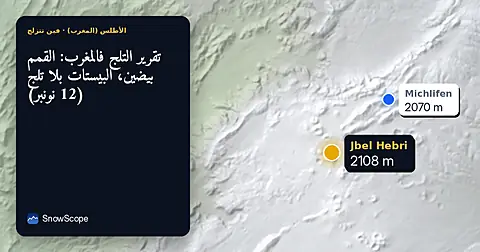
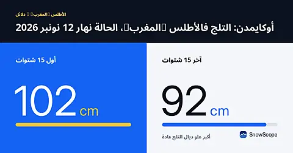
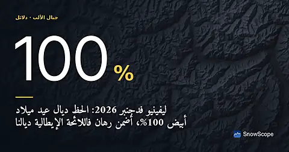
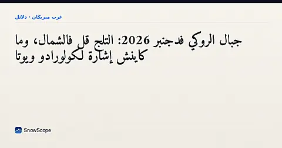
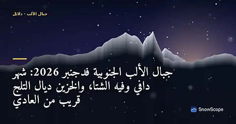

تقارير التلج · العلو ديال التلج
تقارير يومية ديال التلج للي كيتزلجو: فين كاين التلج، شنو جاي، وفين تمشي تتزلج، من الخريطة ديال التلج ديال SnowScope ومحطات القياس. كل رقم جاي من المعطيات ديال داك النهار.



تقرير التلج فالأطلس (المغرب)، 12 نونبر. المحطات ديال التزلج فالأطلس اليوم: حتى تلج فالبيستات. التلج غير فالقمم اللي فالفوق: تقريبا 40 كم² ديال الأرض …

باقي ما كاينش التلج فأوكايمدن: 0 سنتيمتر فالتلاتة ديال العلوات، والو فآخر 7 أيام، والو فالسيمانة الجاية. شنو كيجيب نونبر عادي للأطلس الكبير وفوقاش تخطط للتزلج.

Whistler Blackcomb طاح فيها 75 سم ديال التلج الجديد فالقمة فسيمانة، ومن بعد جات عاصفة سخونة فيها 124 مم ديال الما. دليل ساهل على القاعدة، التلج الجديد، الشتا والقشرة.

برنامج رخيص ديال 3 أيام فبحيرة كومو فدجنبر بالأثمنة الحقيقية ديال 2026-27: الترينو، البابور، الفونيكولير والتزلج ف Piani di Bobbio ولا Madesimo، شحال كتوفر مقارنة مع كورتينا، والحظ ديال التلج فالعيد.

8 سم: هادا هو أكثر تلج كيلقاه الموديل ديالنا فالأطلس اليوم. المحطات ديال التزلج فالأطلس مافيهومش التلج اليوم. الموديل ديال التلج ديالنا كيلقى التلج …

التلج ديال اليوم فليفينيو، شنو كيقول التوقع الموسمي الأوروبي على دجنبر، وعلاش العلو كيغلب الشهر السخون نهار 25 دجنبر.

التلج ديال اليوم فكورتينا، التوقع الموسمي الأوروبي لدجنبر، والحظوظ ديالنا باش يكون نهار 25 دجنبر أبيض فالدولوميت الشرقية.

فين دجنبر 2026 غيكون فيه التلج كثر ولا قل فالدولوميت من Val Gardena حتى لكورتينا: التوقع الموسمي الأوروبي، الخريطة ديالنا والحظوظ ديال 25 دجنبر أبيض.

شحال ديال الما يقدر يحبس التلج ديال الأطلس ففبراير 2027: التوقع الموسمي الأوروبي سخون بتقريبا 3 درجات وفيه الشتا كثر فالغرب والجنوب، والحظوظ ديال التلج باقة ضعيفة فالأحواض ديال المغرب.

التوقع الموسمي الأوروبي كيخلي يناير 2027 سخون بتقريبا 2 درجة فالأطلس. التوقع ديالنا للعلو ديال التلج، الما اللي فالتلج، والما المخزون للوديان ديال المغرب.

بويبلان باقي عريان. التوقع الموسمي الأوروبي كيشوف دجنبر سخون بوضوح، وفكاع الأطلس المتوسط اللي كيطيح فيه التلج الحظوظ ديالنا مايلة لتلج قل.

فين دجنبر 2026 غيكون فيه التلج كثر ولا قل من مونتانا حتى لنيو مكسيكو: التوقع الموسمي الأوروبي والخريطة ديالنا، مع كولورادو ويوتا والروكي الشمالية.

واش الغطا ديال التلج من Écrins حتى للألب البحرية و Piemonte غيتعمر بحال العادة فدجنبر 2026؟ التوقع الموسمي الأوروبي والخريطة ديالنا، جبل بجبل.

باقي ما كاينش التلج فأوكايمدن. التوقع الموسمي الأوروبي كيشوف دجنبر سخون كثر فالأطلس الكبير، والخريطة ديالنا كتبين حظوظ قل فتقريبا كاع القمم.

التلج ديال اليوم ف Grands Montets، التوقع الموسمي الأوروبي لدجنبر، والخريطة ديالنا فين غيكون التلج كثر ولا قل حدا مون بلان.